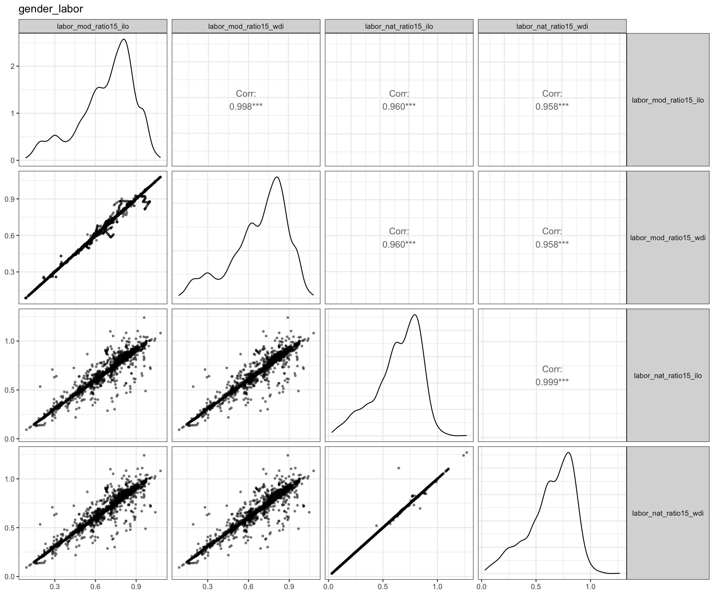
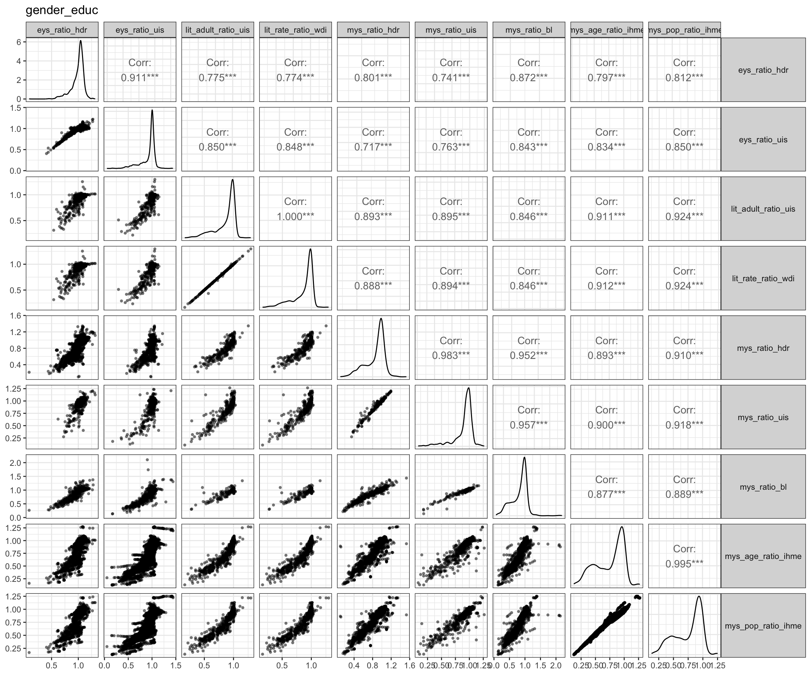

Data & Correlations
Dataset
All the analyses are based on a large global dataset (and accompanying codebook) which we assembled from commonly used quantitative indicators on health, gender equality and several types of violence. The codebook, including variable definitions and summary statistics, is available as a Googlesheet in the shared Google Drive of the Lancet Commission Metrics Working Group, or at this link (access via logging into the shared folder provides more functionality). The dataset is also available in the shared Dropbox folder of the Working Group.) We begin by considering the following measures within the categories of health outcomes, gender inequalities, state-based violent conflict, one-sided violence, and societal violence. The code also sets up vectors of variable names for later use.)
load("_data/dataset_LSCMWG.RData")
link <- "https://docs.google.com/spreadsheets/d/1KLFTva--XHVBM-IX6qaPtuyzmIlRMnpyjUXfBdJPsag/edit?usp=sharing"
googlesheets4::gs4_deauth()
codebook <- googlesheets4::read_sheet(link, sheet = "codebook")
IsTrue <- function(x) { !is.na(x) & x }
categories <- list(
one_sided = codebook$variable[IsTrue(codebook$flag == "use") &
codebook$sub_category %in% c("one-sided violence", "repression")],
societal = codebook$variable[IsTrue(codebook$flag == "use") &
IsTrue(codebook$sub_category == "societal violence")],
conflict = codebook$variable[IsTrue(codebook$flag == "use") &
IsTrue(codebook$sub_category == "state-based conflict")],
gender = codebook$variable[IsTrue(codebook$flag == "use") &
IsTrue(codebook$category == "gender") &
IsTrue(!codebook$sub_category %in% c("education", "labor") | is.na(codebook$sub_category))],
gender_labor = codebook$variable[IsTrue(codebook$flag == "use") &
IsTrue(codebook$category == "gender" & codebook$sub_category == "labor")],
gender_educ = codebook$variable[IsTrue(codebook$flag == "use") &
IsTrue(codebook$category == "gender" & codebook$sub_category == "education")],
health = codebook$variable[IsTrue(codebook$flag == "use") &
codebook$category %in% c("health")]
)
categories
variables <- list(
measurement_models = c("latentmean_fariss", "v2cltort", "v2clkill", "v2caviol"),
death_rates = c("deaths_all_int_rate", "deaths_civilians_int_rate", "deaths_civilians_osv_rate",
"deaths_all_nsc_rate", "deaths_civilians_nsc_rate", "deaths_all_ucdp_rate", "hom_odcwho_rate"),
conflict_incidence = c("conflict_internal", "war_internal", "conflict_non_state", "conflict_one_sided"),
health_full = c("imr_wpp", "ufmr_wpp", "life_exp_wpp", "daly_ihme"),
gender_full = c("labor_mod_ratio15_ilo", "wmn_parl_wdi", "tfr_wpp",
"asfr_adol_wpp", "daly_ratio_ihme", "mys_ratio_hdr"),
political = c("polity2_p4", "dem_bmr", "v2x_polyarchy", "v2x_libdem",
"v2x_liberal", "v2x_partipdem", "v2x_partip")
)
variables <- lapply(variables, function(set) {
names(set) <- set
return(set)
})Country data coverage over time
Due to data availability, the time period for our analyses will be primarily from 1990 until 2015 or 2018.
lapply(categories, function(cat) {
tbl <- lapply(cat, function(col_name) {
table(data$year, !is.na(data[, col_name]))[, 2]
})
tbl <- do.call(cbind, tbl)
colnames(tbl) <- cat
return(tbl)
})## $one_sided
## deaths_civilians_osv_rate deaths_pitf_rate latentmean_fariss v2clkill v2cltort
## 1960 0 0 108 107 107
## 1961 0 0 112 112 112
## 1962 0 0 118 118 118
## 1963 0 0 119 119 119
## 1964 0 0 122 121 121
## 1965 0 0 126 125 125
## 1966 0 0 130 129 129
## 1967 0 0 131 130 130
## 1968 0 0 134 133 133
## 1969 0 0 134 133 133
## 1970 0 0 135 134 134
## 1971 0 0 140 136 136
## 1972 0 0 140 136 136
## 1973 0 0 141 136 136
## 1974 0 0 143 137 137
## 1975 0 0 150 144 144
## 1976 0 0 151 144 144
## 1977 0 0 152 145 145
## 1978 0 0 154 146 146
## 1979 0 0 156 146 146
## 1980 0 0 157 147 147
## 1981 0 0 159 147 147
## 1982 0 0 159 147 147
## 1983 0 0 160 147 147
## 1984 0 0 161 147 147
## 1985 0 0 161 147 147
## 1986 0 0 162 147 147
## 1987 0 0 162 147 147
## 1988 0 0 162 147 147
## 1989 163 0 162 147 147
## 1990 165 0 163 147 147
## 1991 182 0 180 162 162
## 1992 185 0 183 164 164
## 1993 189 0 187 166 166
## 1994 191 0 188 167 167
## 1995 191 191 188 167 167
## 1996 191 191 188 167 167
## 1997 191 191 188 167 167
## 1998 191 191 188 167 167
## 1999 191 191 190 167 167
## 2000 191 191 191 167 167
## 2001 191 191 191 167 167
## 2002 192 192 192 168 168
## 2003 192 192 192 168 168
## 2004 192 192 192 168 168
## 2005 192 192 192 168 168
## 2006 194 194 193 169 169
## 2007 194 194 193 169 169
## 2008 194 194 194 170 170
## 2009 194 194 194 170 170
## 2010 194 194 194 170 170
## 2011 195 195 195 171 171
## 2012 195 195 195 171 171
## 2013 195 195 195 170 170
## 2014 195 195 195 170 170
## 2015 195 195 195 170 170
## 2016 195 195 195 170 170
## 2017 195 195 195 170 170
## 2018 195 195 0 168 168
## 2019 195 195 0 143 143
##
## $societal
## deaths_all_nsc_rate deaths_civilians_nsc_rate hom_odc_rate hom_odcwho_rate hom_who_rate v2caviol
## 1960 0 0 0 32 32 70
## 1961 0 0 0 36 36 74
## 1962 0 0 0 36 36 80
## 1963 0 0 0 40 40 81
## 1964 0 0 0 42 42 83
## 1965 0 0 0 46 46 85
## 1966 0 0 0 45 45 88
## 1967 0 0 0 49 49 88
## 1968 0 0 0 52 52 91
## 1969 0 0 0 50 50 91
## 1970 0 0 0 48 48 95
## 1971 0 0 0 47 47 96
## 1972 0 0 0 47 47 96
## 1973 0 0 0 48 48 96
## 1974 0 0 0 51 51 97
## 1975 0 0 0 53 53 100
## 1976 0 0 0 50 50 100
## 1977 0 0 0 58 58 102
## 1978 0 0 0 55 55 102
## 1979 0 0 0 53 53 102
## 1980 0 0 0 56 56 104
## 1981 0 0 0 58 58 104
## 1982 0 0 0 52 52 104
## 1983 0 0 0 58 58 104
## 1984 0 0 0 60 60 104
## 1985 0 0 0 60 60 104
## 1986 0 0 0 59 59 104
## 1987 0 0 0 68 68 104
## 1988 0 0 0 60 60 104
## 1989 163 163 0 62 62 104
## 1990 165 165 68 85 63 106
## 1991 182 182 80 99 77 119
## 1992 185 185 87 102 80 122
## 1993 189 189 86 102 80 124
## 1994 191 191 93 107 79 125
## 1995 191 191 95 105 75 125
## 1996 191 191 94 103 62 125
## 1997 191 191 97 103 50 125
## 1998 191 191 97 101 40 126
## 1999 191 191 100 101 30 126
## 2000 191 191 112 114 23 127
## 2001 191 191 119 121 18 127
## 2002 192 192 118 120 16 128
## 2003 192 192 132 132 14 128
## 2004 192 192 139 139 11 128
## 2005 192 192 136 137 23 131
## 2006 194 194 141 141 19 132
## 2007 194 194 143 143 19 132
## 2008 194 194 153 153 21 132
## 2009 194 194 150 151 18 132
## 2010 194 194 154 155 19 135
## 2011 195 195 144 145 19 135
## 2012 195 195 146 147 19 136
## 2013 195 195 127 129 19 94
## 2014 195 195 123 126 19 96
## 2015 195 195 125 130 16 96
## 2016 195 195 119 123 12 96
## 2017 195 195 110 111 5 97
## 2018 195 195 87 87 0 98
## 2019 195 195 0 0 0 103
##
## $conflict
## deaths_all_ext_rate deaths_all_int_rate deaths_civilians_ext_rate deaths_civilians_int_rate
## 1960 0 0 0 0
## 1961 0 0 0 0
## 1962 0 0 0 0
## 1963 0 0 0 0
## 1964 0 0 0 0
## 1965 0 0 0 0
## 1966 0 0 0 0
## 1967 0 0 0 0
## 1968 0 0 0 0
## 1969 0 0 0 0
## 1970 0 0 0 0
## 1971 0 0 0 0
## 1972 0 0 0 0
## 1973 0 0 0 0
## 1974 0 0 0 0
## 1975 0 0 0 0
## 1976 0 0 0 0
## 1977 0 0 0 0
## 1978 0 0 0 0
## 1979 0 0 0 0
## 1980 0 0 0 0
## 1981 0 0 0 0
## 1982 0 0 0 0
## 1983 0 0 0 0
## 1984 0 0 0 0
## 1985 0 0 0 0
## 1986 0 0 0 0
## 1987 0 0 0 0
## 1988 0 0 0 0
## 1989 163 163 163 163
## 1990 165 165 165 165
## 1991 182 182 182 182
## 1992 185 185 185 185
## 1993 189 189 189 189
## 1994 191 191 191 191
## 1995 191 191 191 191
## 1996 191 191 191 191
## 1997 191 191 191 191
## 1998 191 191 191 191
## 1999 191 191 191 191
## 2000 191 191 191 191
## 2001 191 191 191 191
## 2002 192 192 192 192
## 2003 192 192 192 192
## 2004 192 192 192 192
## 2005 192 192 192 192
## 2006 194 194 194 194
## 2007 194 194 194 194
## 2008 194 194 194 194
## 2009 194 194 194 194
## 2010 194 194 194 194
## 2011 195 195 195 195
## 2012 195 195 195 195
## 2013 195 195 195 195
## 2014 195 195 195 195
## 2015 195 195 195 195
## 2016 195 195 195 195
## 2017 195 195 195 195
## 2018 195 195 195 195
## 2019 195 195 195 195
##
## $gender
## gdi_hdr gii_hdr wmn_parl_wdi asfr_adol_wpp fert_adol_wdi fertility_wdi tfr_wpp
## 1960 0 0 0 101 101 101 101
## 1961 0 0 0 0 105 104 0
## 1962 0 0 0 0 111 111 0
## 1963 0 0 0 0 112 111 0
## 1964 0 0 0 0 115 115 0
## 1965 0 0 0 119 119 119 119
## 1966 0 0 0 0 123 123 0
## 1967 0 0 0 0 123 123 0
## 1968 0 0 0 0 126 126 0
## 1969 0 0 0 0 126 126 0
## 1970 0 0 0 128 128 128 128
## 1971 0 0 0 0 133 133 0
## 1972 0 0 0 0 133 133 0
## 1973 0 0 0 0 134 134 0
## 1974 0 0 0 0 136 136 0
## 1975 0 0 0 143 143 143 143
## 1976 0 0 0 0 145 145 0
## 1977 0 0 0 0 146 145 0
## 1978 0 0 0 0 147 146 0
## 1979 0 0 0 0 150 149 0
## 1980 0 0 0 151 151 150 151
## 1981 0 0 0 0 153 152 0
## 1982 0 0 0 0 153 154 0
## 1983 0 0 0 0 153 152 0
## 1984 0 0 0 0 153 152 0
## 1985 0 0 0 153 153 152 153
## 1986 0 0 0 0 154 153 0
## 1987 0 0 0 0 154 157 0
## 1988 0 0 0 0 154 153 0
## 1989 0 0 0 0 154 153 0
## 1990 0 0 0 156 156 155 156
## 1991 0 0 0 0 173 172 0
## 1992 0 0 0 0 176 178 0
## 1993 0 0 0 0 179 178 0
## 1994 0 0 0 0 180 179 0
## 1995 117 121 0 181 180 180 181
## 1996 0 0 0 0 180 179 0
## 1997 0 0 160 0 180 182 0
## 1998 0 0 162 0 180 180 0
## 1999 0 0 153 0 180 181 0
## 2000 145 119 157 181 180 182 181
## 2001 0 0 167 0 180 181 0
## 2002 0 0 161 0 181 184 0
## 2003 0 0 174 0 181 183 0
## 2004 0 0 181 0 181 182 0
## 2005 156 144 185 182 181 184 182
## 2006 0 0 189 0 183 186 0
## 2007 0 0 188 0 183 186 0
## 2008 0 0 187 0 183 186 0
## 2009 0 0 187 0 183 186 0
## 2010 160 149 187 184 183 186 184
## 2011 162 150 187 0 183 186 0
## 2012 163 153 188 0 183 187 0
## 2013 163 150 183 0 183 185 0
## 2014 164 152 186 0 183 185 0
## 2015 164 158 188 185 183 186 185
## 2016 164 162 191 0 183 185 0
## 2017 165 160 189 0 183 185 0
## 2018 165 162 190 185 183 185 185
## 2019 0 0 192 0 0 0 0
##
## $gender_labor
## labor_mod_ratio15_ilo labor_mod_ratio15_wdi labor_nat_ratio15_ilo labor_nat_ratio15_wdi
## 1960 0 0 31 31
## 1961 0 0 20 20
## 1962 0 0 7 7
## 1963 0 0 9 9
## 1964 0 0 6 6
## 1965 0 0 8 8
## 1966 0 0 15 15
## 1967 0 0 3 3
## 1968 0 0 3 3
## 1969 0 0 3 3
## 1970 0 0 34 34
## 1971 0 0 23 23
## 1972 0 0 9 9
## 1973 0 0 10 9
## 1974 0 0 12 12
## 1975 0 0 29 29
## 1976 0 0 27 27
## 1977 0 0 25 25
## 1978 0 0 32 31
## 1979 0 0 40 39
## 1980 0 0 61 60
## 1981 0 0 49 48
## 1982 0 0 39 38
## 1983 0 0 46 44
## 1984 0 0 44 42
## 1985 0 0 56 54
## 1986 0 0 56 54
## 1987 0 0 51 49
## 1988 0 0 55 53
## 1989 0 0 63 61
## 1990 153 151 70 68
## 1991 169 168 83 82
## 1992 172 171 65 64
## 1993 175 174 72 71
## 1994 176 175 77 76
## 1995 176 175 76 75
## 1996 176 175 87 86
## 1997 176 175 85 84
## 1998 176 175 88 87
## 1999 176 175 87 86
## 2000 176 175 99 98
## 2001 176 175 97 96
## 2002 177 176 96 95
## 2003 177 176 99 98
## 2004 177 176 100 99
## 2005 177 176 107 106
## 2006 179 178 106 105
## 2007 179 178 103 102
## 2008 179 178 103 102
## 2009 179 178 112 113
## 2010 179 178 115 115
## 2011 180 178 113 112
## 2012 180 178 118 117
## 2013 180 178 118 117
## 2014 180 178 123 123
## 2015 180 178 114 112
## 2016 180 178 112 112
## 2017 180 178 111 113
## 2018 180 178 98 102
## 2019 180 178 64 86
##
## $gender_educ
## eys_ratio_hdr eys_ratio_uis lit_adult_ratio_uis lit_rate_ratio_wdi mys_ratio_hdr mys_ratio_uis
## 1960 0 0 0 0 0 0
## 1961 0 0 0 0 0 0
## 1962 0 0 0 0 0 0
## 1963 0 0 0 0 0 0
## 1964 0 0 0 0 0 0
## 1965 0 0 0 0 0 0
## 1966 0 0 0 0 0 0
## 1967 0 0 0 0 0 0
## 1968 0 0 0 0 0 0
## 1969 0 0 0 0 0 0
## 1970 0 29 1 1 0 27
## 1971 0 98 0 0 0 17
## 1972 0 93 1 1 0 5
## 1973 0 91 0 0 0 3
## 1974 0 86 0 0 0 5
## 1975 0 85 6 6 0 13
## 1976 0 94 7 7 0 9
## 1977 0 96 1 1 0 2
## 1978 0 93 2 2 0 2
## 1979 0 94 6 6 0 6
## 1980 0 91 16 16 0 23
## 1981 0 98 16 16 0 21
## 1982 0 95 7 7 0 7
## 1983 0 96 2 2 0 4
## 1984 0 100 7 8 0 4
## 1985 0 96 6 6 0 6
## 1986 0 104 4 4 0 8
## 1987 0 98 3 3 0 2
## 1988 0 99 5 5 0 6
## 1989 0 96 1 1 0 2
## 1990 94 92 15 15 125 19
## 1991 0 95 20 20 0 16
## 1992 0 94 9 9 0 8
## 1993 0 105 4 4 0 2
## 1994 0 98 11 11 0 3
## 1995 145 92 5 5 143 5
## 1996 0 87 9 9 0 5
## 1997 0 71 3 3 0 0
## 1998 0 84 6 6 0 3
## 1999 0 134 8 8 0 4
## 2000 166 131 43 44 154 16
## 2001 0 127 28 29 0 22
## 2002 0 129 19 20 0 16
## 2003 0 124 10 10 0 11
## 2004 0 136 24 25 0 29
## 2005 171 139 20 22 165 33
## 2006 0 134 26 28 0 50
## 2007 0 138 35 36 0 53
## 2008 0 136 32 33 0 62
## 2009 0 133 34 35 0 63
## 2010 178 135 48 51 168 74
## 2011 180 138 57 58 170 76
## 2012 180 131 45 46 170 67
## 2013 180 117 34 34 170 58
## 2014 180 128 52 52 171 68
## 2015 181 131 42 42 171 64
## 2016 181 126 34 35 171 61
## 2017 182 123 32 32 171 48
## 2018 182 64 77 77 171 35
## 2019 0 4 0 1 0 0
##
## $health
## daly_ihme imr_wdi imr_wpp life_exp_wdi life_exp_wpp ufmr_wdi ufmr_wpp physicians_pc_wdi daly_ratio_ihme mmr_unicef
## 1960 0 74 101 100 101 74 101 85 0 0
## 1961 0 78 0 105 0 78 0 18 0 0
## 1962 0 87 0 111 0 87 0 16 0 0
## 1963 0 89 0 111 0 89 0 16 0 0
## 1964 0 93 0 114 0 93 0 16 0 0
## 1965 0 98 119 118 119 98 119 98 0 0
## 1966 0 103 0 123 0 103 0 19 0 0
## 1967 0 104 0 123 0 104 0 17 0 0
## 1968 0 108 0 126 0 108 0 17 0 0
## 1969 0 112 0 126 0 112 0 17 0 0
## 1970 0 114 128 128 128 114 128 112 0 0
## 1971 0 121 0 133 0 121 0 25 0 0
## 1972 0 123 0 133 0 123 0 21 0 0
## 1973 0 124 0 134 0 124 0 22 0 0
## 1974 0 127 0 136 0 127 0 20 0 0
## 1975 0 133 143 143 143 133 143 80 0 0
## 1976 0 135 0 144 0 135 0 25 0 0
## 1977 0 136 0 145 0 136 0 26 0 0
## 1978 0 143 0 146 0 143 0 24 0 0
## 1979 0 146 0 149 0 146 0 34 0 0
## 1980 0 148 151 151 151 148 151 68 0 0
## 1981 0 150 0 153 0 150 0 91 0 0
## 1982 0 152 0 154 0 152 0 43 0 0
## 1983 0 154 0 153 0 154 0 36 0 0
## 1984 0 154 0 153 0 154 0 72 0 0
## 1985 0 160 153 153 153 160 153 57 0 0
## 1986 0 162 0 154 0 162 0 50 0 0
## 1987 0 162 0 157 0 162 0 37 0 0
## 1988 0 162 0 154 0 162 0 45 0 0
## 1989 0 162 0 154 0 162 0 48 0 0
## 1990 160 164 156 156 156 164 156 119 160 0
## 1991 177 181 0 173 0 181 0 89 177 0
## 1992 180 184 0 178 0 184 0 91 180 0
## 1993 183 187 0 179 0 187 0 115 183 0
## 1994 184 189 0 181 0 189 0 88 184 0
## 1995 184 189 181 182 181 189 181 122 184 0
## 1996 184 189 0 181 0 189 0 105 184 0
## 1997 184 189 0 183 0 189 0 111 184 0
## 1998 184 189 0 181 0 189 0 95 184 0
## 1999 184 189 0 182 0 189 0 91 184 0
## 2000 184 189 181 183 181 189 181 107 184 180
## 2001 184 189 0 181 0 189 0 100 184 0
## 2002 185 190 0 184 0 190 0 95 185 0
## 2003 185 190 0 182 0 190 0 89 185 0
## 2004 185 190 0 182 0 190 0 133 185 0
## 2005 185 190 182 183 182 190 182 105 185 181
## 2006 187 192 0 184 0 192 0 104 187 0
## 2007 187 192 0 184 0 192 0 117 187 0
## 2008 187 192 0 185 0 192 0 138 187 0
## 2009 187 192 0 185 0 192 0 135 187 0
## 2010 187 192 184 185 184 192 184 164 187 183
## 2011 188 192 0 185 0 192 0 118 188 0
## 2012 188 192 0 186 0 192 0 116 188 0
## 2013 188 192 0 185 0 192 0 115 188 0
## 2014 188 192 0 185 0 192 0 114 188 0
## 2015 188 192 185 185 185 192 185 105 188 184
## 2016 188 192 0 185 0 192 0 113 188 0
## 2017 188 192 0 185 0 192 0 104 188 184
## 2018 0 192 185 185 185 192 185 61 0 0
## 2019 0 192 0 0 0 192 0 0 0 0Within-category correlations
lapply(names(categories), function(category) {
GGally::ggpairs(data[, categories[[category]]], mapping = aes(stroke = 0, alpha = 0.25)) +
theme_bw() +
theme(strip.text.y.right = element_text(angle = 0)) +
ggtitle(category)
})
Across-category correlations
Based on theoretical relevance and representativeness (see within-category correlations), we show correlations of certain of these variables across the categories:
variables_to_include <- c("labor_mod_ratio15_ilo", "mys_ratio_hdr", "tfr_wpp", "asfr_adol_wpp", "imr_wpp",
"ufmr_wpp", "daly_ihme", "physicians_pc_wdi", "life_exp_wpp", "pc_rgdpe_pwt",
"deaths_all_int_rate", "deaths_all_osv_rate", "latentmean_fariss",
"deaths_all_nsc_rate", "hom_odcwho_rate")
GGally::ggpairs(data[, variables_to_include], mapping = aes(stroke = 0, alpha = 0.25)) +
theme_bw() +
theme(strip.text.y.right = element_text(angle = 0))
Which countries have such high ratios of years of schooling in favor of women?
We noticed that some of the education ratios (female to male) are surprisingly high, and want to know which country-years account for this.
variables$ed <- c("mys_ratio_hdr", "mys_ratio_uis", "eys_ratio_hdr", "eys_ratio_uis")
summary(data[, variables$ed])## mys_ratio_hdr mys_ratio_uis eys_ratio_hdr eys_ratio_uis
## Min. :0.104 Min. :0.081 Min. :0.080 Min. :0.052
## 1st Qu.:0.734 1st Qu.:0.878 1st Qu.:0.939 1st Qu.:0.884
## Median :0.935 Median :0.956 Median :1.024 Median :0.989
## Mean :0.857 Mean :0.902 Mean :0.987 Mean :0.925
## 3rd Qu.:1.000 3rd Qu.:1.002 3rd Qu.:1.064 3rd Qu.:1.015
## Max. :1.529 Max. :1.267 Max. :1.317 Max. :1.441
## NA's :8188 NA's :9165 NA's :8108 NA's :5100paste(unique(data$country[IsTrue(data$mys_ratio_hdr > 1)]), collapse = "; ")## [1] "Argentina; Armenia; Australia; Bahamas; Barbados; Belize; Brazil; Bulgaria; Canada; Colombia; Costa Rica; Cuba; Denmark; Dominican Republic; Estonia; Fiji; Finland; Gabon; Guyana; Honduras; Iceland; Ireland; Israel; Jamaica; Japan; Jordan; Kazakhstan; Kuwait; Kyrgyzstan; Latvia; Lesotho; Libya; Madagascar; Malta; Moldova; Mongolia; Myanmar; Namibia; New Zealand; Nicaragua; Norway; Oman; Panama; Paraguay; Philippines; Poland; Portugal; Qatar; Saint Lucia; Sweden; Tonga; Trinidad & Tobago; United Arab Emirates; United States of America; Uruguay; Venezuela"data[IsTrue(data$mys_ratio_hdr > 1), c("country", "year", variables$ed)]Inverting variables for comparable interpretations
Since we are dealing with a wide range of measures, we need to ensure that they reflect the same “direction” of effects. We do this by coding the negative of some variables, so that higher values indicate better outcomes for the health and gender categories and higher values indicate worse outcomes for the violence categories.
variables$negative <- c("imr_wpp", "ufmr_wpp", "mmr_unicef", "daly_ihme", "asfr_adol_wpp", "tfr_wpp",
"latentmean_fariss", "v2cltort", "v2clkill", "latentmean_fariss_cumulative1991",
"latentmean_fariss_cumulative1996", "v2cltort_cumulative1991",
"v2cltort_cumulative1996", "v2clkill_cumulative1991", "v2clkill_cumulative1996")
summary(data[, c(variables$negative[1:9])])## imr_wpp ufmr_wpp mmr_unicef daly_ihme asfr_adol_wpp tfr_wpp latentmean_fariss v2cltort v2clkill
## Min. : 1.254 Min. : 1.765 Min. : 2 Min. : 15334 Min. : 0.283 Min. :1.051 Min. :-3.767 Min. :-3.2680 Min. :-3.5870
## 1st Qu.: 15.363 1st Qu.: 18.328 1st Qu.: 17 1st Qu.: 27130 1st Qu.: 29.676 1st Qu.:2.170 1st Qu.:-1.097 1st Qu.:-0.9450 1st Qu.:-0.6980
## Median : 40.161 Median : 50.881 Median : 65 Median : 32776 Median : 69.553 Median :3.782 Median :-0.074 Median : 0.3440 Median : 0.7360
## Mean : 56.186 Mean : 84.469 Mean : 202 Mean : 43276 Mean : 78.652 Mean :4.065 Mean : 0.091 Mean : 0.3197 Mean : 0.5478
## 3rd Qu.: 85.913 3rd Qu.:129.686 3rd Qu.: 277 3rd Qu.: 50724 3rd Qu.:117.050 3rd Qu.:5.955 3rd Qu.: 1.187 3rd Qu.: 1.6570 3rd Qu.: 1.9530
## Max. :319.239 Max. :465.517 Max. :2480 Max. :788016 Max. :242.574 Max. :8.800 Max. : 5.140 Max. : 3.3210 Max. : 3.2090
## NA's :8259 NA's :8259 NA's :9396 NA's :5145 NA's :8259 NA's :8259 NA's :681 NA's :1209 NA's :1209data[, variables$negative] <- lapply(data[, variables$negative], '-')
summary(data[, c(variables$negative[1:9])])## imr_wpp ufmr_wpp mmr_unicef daly_ihme asfr_adol_wpp tfr_wpp latentmean_fariss v2cltort v2clkill
## Min. :-319.239 Min. :-465.517 Min. :-2480 Min. :-788016 Min. :-242.574 Min. :-8.800 Min. :-5.140 Min. :-3.3210 Min. :-3.2090
## 1st Qu.: -85.913 1st Qu.:-129.686 1st Qu.: -277 1st Qu.: -50724 1st Qu.:-117.050 1st Qu.:-5.955 1st Qu.:-1.187 1st Qu.:-1.6570 1st Qu.:-1.9530
## Median : -40.161 Median : -50.881 Median : -65 Median : -32776 Median : -69.553 Median :-3.782 Median : 0.074 Median :-0.3440 Median :-0.7360
## Mean : -56.186 Mean : -84.469 Mean : -202 Mean : -43276 Mean : -78.652 Mean :-4.065 Mean :-0.091 Mean :-0.3197 Mean :-0.5478
## 3rd Qu.: -15.363 3rd Qu.: -18.328 3rd Qu.: -17 3rd Qu.: -27130 3rd Qu.: -29.676 3rd Qu.:-2.170 3rd Qu.: 1.097 3rd Qu.: 0.9450 3rd Qu.: 0.6980
## Max. : -1.254 Max. : -1.765 Max. : -2 Max. : -15334 Max. : -0.283 Max. :-1.051 Max. : 3.767 Max. : 3.2680 Max. : 3.5870
## NA's :8259 NA's :8259 NA's :9396 NA's :5145 NA's :8259 NA's :8259 NA's :681 NA's :1209 NA's :1209Variable transformations and coding performance measures
data <- data %>% dplyr::arrange(country, year) %>%
mutate(period = cut(year, seq(1960, 2020, 5), right = TRUE))
names(variables$health) <- variables$health <- c("life_exp_wpp", "imr_wpp")
names(variables$gender) <- variables$gender <- c("mys_ratio_hdr", "asfr_adol_wpp")
vars <- c(variables$health, variables$gender, "pc_rgdpe_pwt")
data <- data %>% group_by(country, period) %>%
mutate(across(all_of(vars), ~mean(.x, na.rm = TRUE), .names = "{col}_avg"), .keep = "all")
data[, paste(vars, "avg", sep = "_")] <- lapply(data[, paste(vars, "avg", sep = "_")], function(col) {
col[is.nan(col)] <- NA
return(col)
})
take_logs <- c("pc_rgdpe_pwt", "life_exp_wpp", "mys_ratio_hdr")
take_logs <- c(take_logs, paste(take_logs, "avg", sep = "_"))
take_logs_negative <- c("imr_wpp", "asfr_adol_wpp")
take_logs_negative <- c(take_logs_negative, paste(take_logs_negative, "avg", sep = "_"))
summary(data[, sort(c(take_logs, take_logs_negative))])## asfr_adol_wpp asfr_adol_wpp_avg imr_wpp imr_wpp_avg life_exp_wpp life_exp_wpp_avg mys_ratio_hdr mys_ratio_hdr_avg pc_rgdpe_pwt pc_rgdpe_pwt_avg
## Min. :-242.574 Min. :-242.574 Min. :-319.239 Min. :-319.239 Min. :14.49 Min. :14.49 Min. :0.104 Min. :0.104 Min. : 226.3 Min. : 423.4
## 1st Qu.:-117.050 1st Qu.:-114.743 1st Qu.: -85.913 1st Qu.: -81.977 1st Qu.:55.06 1st Qu.:55.78 1st Qu.:0.734 1st Qu.:0.694 1st Qu.: 2255.1 1st Qu.: 2283.9
## Median : -69.553 Median : -68.097 Median : -40.161 Median : -38.269 Median :66.91 Median :67.30 Median :0.935 Median :0.919 Median : 5664.2 Median : 5863.5
## Mean : -78.652 Mean : -77.720 Mean : -56.186 Mean : -53.855 Mean :63.73 Mean :64.16 Mean :0.857 Mean :0.835 Mean : 11675.4 Mean : 11907.5
## 3rd Qu.: -29.676 3rd Qu.: -29.279 3rd Qu.: -15.363 3rd Qu.: -14.938 3rd Qu.:72.89 3rd Qu.:73.07 3rd Qu.:1.000 3rd Qu.:0.990 3rd Qu.: 14680.7 3rd Qu.: 15047.4
## Max. : -0.283 Max. : -0.283 Max. : -1.254 Max. : -1.254 Max. :84.43 Max. :84.43 Max. :1.529 Max. :1.529 Max. :253103.4 Max. :230063.7
## NA's :8259 NA's :773 NA's :8259 NA's :773 NA's :8259 NA's :773 NA's :8188 NA's :5009 NA's :1909 NA's :1499data[, paste("lg", take_logs, sep = "_")] <- lapply(data[, take_logs], log)
data[, paste("lg", take_logs_negative, sep = "_")] <- lapply(data[, take_logs_negative], function(col) { -log(-col) })
summary(data[, paste ("lg", sort(c(take_logs, take_logs_negative)), sep = "_")])## lg_asfr_adol_wpp lg_asfr_adol_wpp_avg lg_imr_wpp lg_imr_wpp_avg lg_life_exp_wpp lg_life_exp_wpp_avg lg_mys_ratio_hdr lg_mys_ratio_hdr_avg lg_pc_rgdpe_pwt lg_pc_rgdpe_pwt_avg
## Min. :-5.491 Min. :-5.491 Min. :-5.766 Min. :-5.7659 Min. :2.673 Min. :2.674 Min. :-2.262 Min. :-2.262 Min. : 5.422 Min. : 6.048
## 1st Qu.:-4.763 1st Qu.:-4.743 1st Qu.:-4.453 1st Qu.:-4.4064 1st Qu.:4.008 1st Qu.:4.021 1st Qu.:-0.309 1st Qu.:-0.366 1st Qu.: 7.721 1st Qu.: 7.734
## Median :-4.242 Median :-4.221 Median :-3.693 Median :-3.6446 Median :4.203 Median :4.209 Median :-0.068 Median :-0.085 Median : 8.642 Median : 8.677
## Mean :-3.996 Mean :-3.983 Mean :-3.521 Mean :-3.4863 Mean :4.135 Mean :4.143 Mean :-0.194 Mean :-0.227 Mean : 8.662 Mean : 8.686
## 3rd Qu.:-3.390 3rd Qu.:-3.377 3rd Qu.:-2.732 3rd Qu.:-2.7039 3rd Qu.:4.289 3rd Qu.:4.291 3rd Qu.: 0.000 3rd Qu.:-0.010 3rd Qu.: 9.594 3rd Qu.: 9.619
## Max. : 1.262 Max. : 1.262 Max. :-0.226 Max. :-0.2263 Max. :4.436 Max. :4.436 Max. : 0.425 Max. : 0.425 Max. :12.442 Max. :12.346
## NA's :8259 NA's :773 NA's :8259 NA's :773 NA's :8259 NA's :773 NA's :8188 NA's :5009 NA's :1909 NA's :1499CodePerformance <- function(y_var, x_vars, df) {
x_vars <- paste(x_vars, collapse = " + ")
equation <- paste(y_var, "~", x_vars)
df <- na.omit(get_all_vars(formula = equation, data = df, country = country, year = year))
mod <- lm(formula = equation, data = df)
df$predicted <- predict(mod)
df[, paste("perf", y_var, sep = "_")] <- df[, y_var] - df$predicted
return(df[, c("country", "year", paste("perf", y_var, sep = "_"))])
}
vars <- c(variables$health, variables$gender)
names(vars) <- vars <- c(vars, paste(vars, "avg", sep = "_"))
names(years) <- years <- c(seq(1965, 2015, 5), 2018)
performance_measures <- lapply(vars, function(var) {
results <- lapply(years, function(year) {
dat <- data[data$year == year, c("country", "year", "lg_pc_rgdpe_pwt_avg", var)]
if(nrow(na.omit(dat)) > 0) {
CodePerformance(y_var = var, x_vars = "lg_pc_rgdpe_pwt_avg", df = dat)
}
})
results <- results[!unlist(lapply(results, is.null))]
do.call(rbind, results)
})
performance_measures <- Reduce(f = function(...) merge(..., by = c("country", "year"), all = TRUE), x = performance_measures)
data <- merge(data, performance_measures, by = c("country", "year"), all.x = TRUE)
save(data, codebook, categories, variables, file = "_data/LSCMWG_working_data.RData")